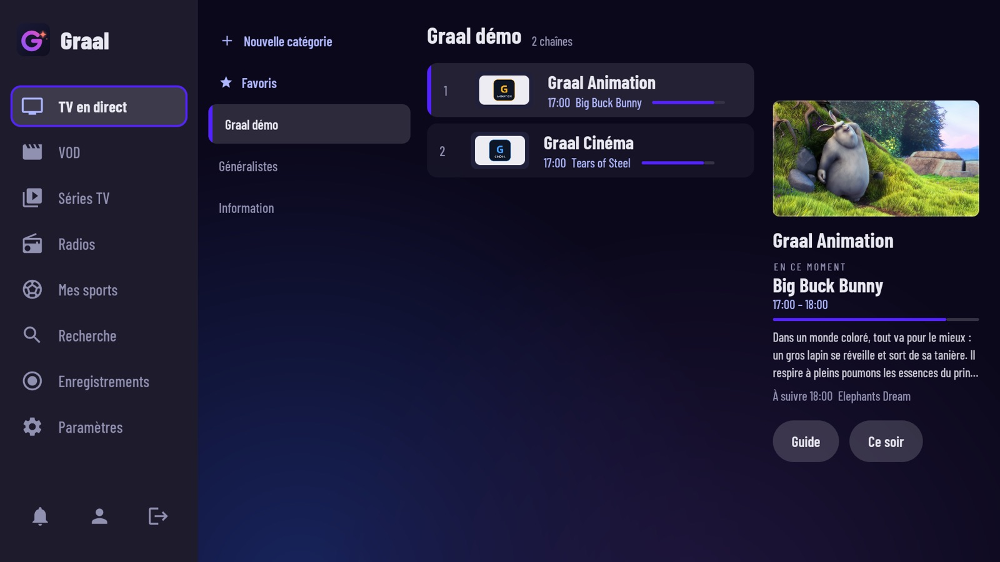
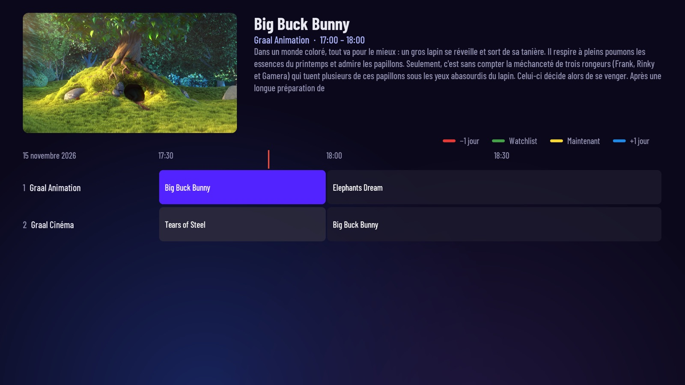
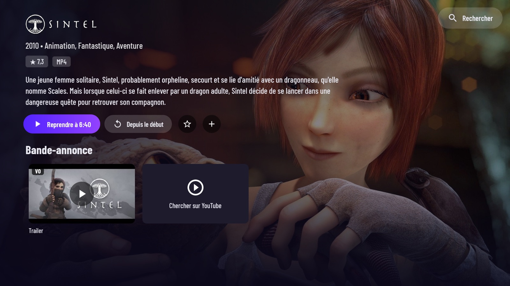
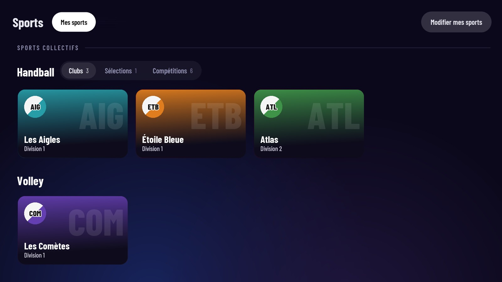
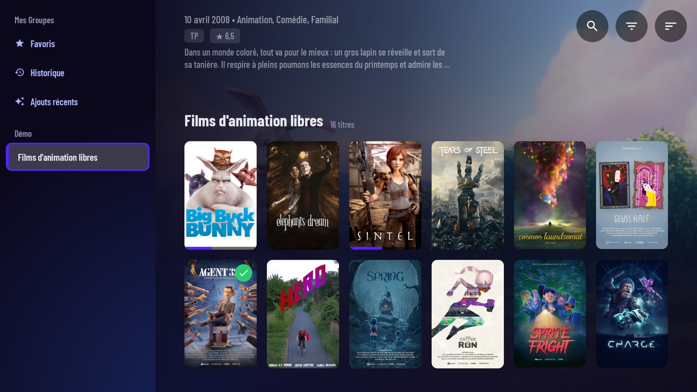

Votre IPTV mérite
un vrai lecteur.
Direct avec guide, films, séries et sports dans une interface rapide, pensée pour la télécommande. Sur votre box, votre téléphone, votre PC et votre Mac.
Installé en 2 minutes · Aucun compte à créer · Graal est un lecteur : il ne fournit aucune chaîne, vous y ajoutez votre propre playlist.

Quatre raisons de changer de lecteur
Les écrans ci-dessous sont de vraies captures de Graal, avec des contenus libres de droits.
Le direct, sans attendre
Vos chaînes avec le programme en cours et le suivant, un zapping immédiat, et le guide complet sur la vidéo qui continue.
- Guide des programmes complet, logos officiels
- Seulement les chaînes dans vos langues
- Une seule connexion et des demandes espacées, pour ménager votre compte

Films et séries comme sur une plateforme
De vraies fiches : résumé, acteurs, bandes-annonces dans votre langue, épisodes illustrés, et la reprise exactement où vous vous êtes arrêté.
- Reprise à la seconde près, épisodes vus
- Filtres et tris : pas encore regardés, mieux notés, derniers ajoutés
- Des titres recommandés sur chaque fiche

Vos sports, vos équipes
Suivez vos clubs, vos sélections et vos pilotes : leurs matchs à la télé, sur vos chaînes, avec un rappel avant le début.
- De nombreux sports et championnats
- Les rendez-vous du jour en un coup d'œil
- Rappels avant le début

Tout retrouver en un instant
Recherche rapide : tapez quelques lettres, Graal cherche en même temps dans les chaînes, les films et les séries. Elle s'ouvre de partout, même pendant une vidéo (touche verte de la télécommande).
- Vos listes : rangez vos chaînes, films et séries dans vos propres listes, en tête des catégories
- Catégories intelligentes (Premium) : choisissez Info, Documentaires ou Enfants, la catégorie se remplit et se tient à jour toute seule
- Favoris, historique et « Ajouts récents » toujours à portée

Télécharger Graal
Gratuit. Les mises à jour arrivent ensuite toutes seules, dans l'appli.
Android TV · Google TV
Box et TV Android 7 ou plus : Shield, Mi Box, Chromecast avec Google TV, Formuler…
Télécharger l'APKFire TV
Avec l'appli gratuite Downloader, tapez simplement :
graaltv.com/apk- Installez Downloader depuis l'Appstore (gratuit, icône orange).
- Paramètres › Ma Fire TV › À propos : cliquez 7 fois sur le nom de l'appareil.
- Options pour les développeurs › Installer des applis inconnues › Downloader : activé.
- Dans Downloader, tapez graaltv.com/apk, puis Installer.
Non compatible : les Fire TV sous Vega OS (Fire TV Stick HD 2025) et les TV non Android.
Questions fréquentes
Graal fournit-il des chaînes ?
Non. Graal est un lecteur : vous y ajoutez la playlist de votre choix. Utilisez-le uniquement avec des contenus auxquels vous avez légalement accès.
Quelles playlists sont compatibles ?
Xtream Codes (serveur, identifiant et mot de passe), portail MAC (Stalker / Ministra) et playlists M3U, par lien ou par fichier.
La version gratuite est-elle limitée dans le temps ?
Non. Le direct, le guide, les films, les séries, la recherche et les favoris restent gratuits, sans limite de durée et sans publicité.
Je réinitialise ma box : est-ce que je perds Premium ?
Non. Réinstallez Graal, puis Paramètres › Premium › « Je l'ai déjà » avec votre adresse e-mail et le code reçu : Premium revient tout de suite.
Sur combien d'appareils puis-je utiliser Premium ?
Un appareil avec la formule 1 appareil, jusqu'à cinq avec la formule Foyer (box, téléphone, PC, Mac…). Vous pouvez remplacer un ancien appareil par un nouveau.
Que deviennent mes données ?
Votre playlist reste uniquement sur votre appareil. Le serveur Graal ne garde rien en clair : votre adresse e-mail, le code et le nom de vos appareils sont chiffrés (AES-256-GCM, un vecteur aléatoire par donnée) et retrouvés par une empreinte poivrée (HMAC-SHA256, clé secrète gardée hors de la base). Votre historique synchronisé est chiffré sur votre box avant d'être envoyé. Les paiements se font sur la page sécurisée du prestataire : Graal ne voit jamais votre carte.